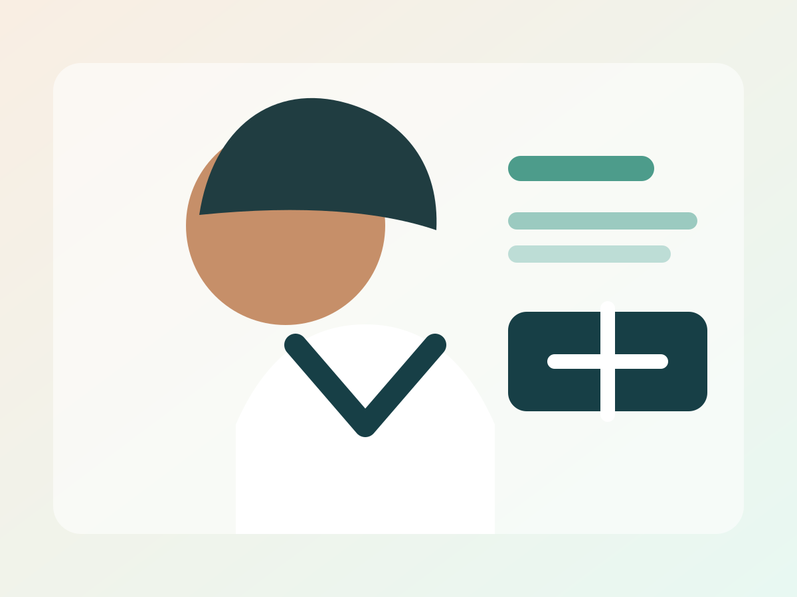

01♡
General Consultation
One-to-one consultation for symptoms, routine health concerns and appropriate next steps.
Book consultation ↗Clear consultations, thoughtful care and a calm clinic experience designed around you.

CONSULTATION · CLINICA consultation should leave you with clarity, not more questions.
Dr. Ananya Mehta is a sample physician profile for this website concept. This page is not a real doctor, clinic or medical service. Replace the profile, qualifications, specialty and professional information with verified details before publishing for a real practice.
Service descriptions are general demo copy. A real doctor's actual scope of practice should be substituted before launch.
One-to-one consultation for symptoms, routine health concerns and appropriate next steps.
Book consultation ↗Routine health discussions, screening guidance and practical prevention planning.
Book consultation ↗Follow-up consultations and structured support for ongoing health management.
Book consultation ↗Review of existing reports and treatment information to help visitors understand options.
Book consultation ↗This static demo prepares a WhatsApp enquiry for OnlineChalo. No medical information is submitted to a clinic.
A clean, comfortable environment helps make the consultation experience feel more considered from the moment you arrive.
“The consultation felt calm and unhurried. Everything was explained clearly.”
“The appointment process was straightforward and the clinic experience was professional.”
“I appreciated the time taken to discuss concerns and next steps clearly.”
No. This is a demonstration website concept by OnlineChalo for presentation purposes.
All WhatsApp enquiry actions route to OnlineChalo at the production contact number.
Yes. A real version would use verified doctor details, clinic information, photos and approved service copy.
Ask OnlineChalo about a website like this for your clinic or practice.
WhatsApp OnlineChalo ↗